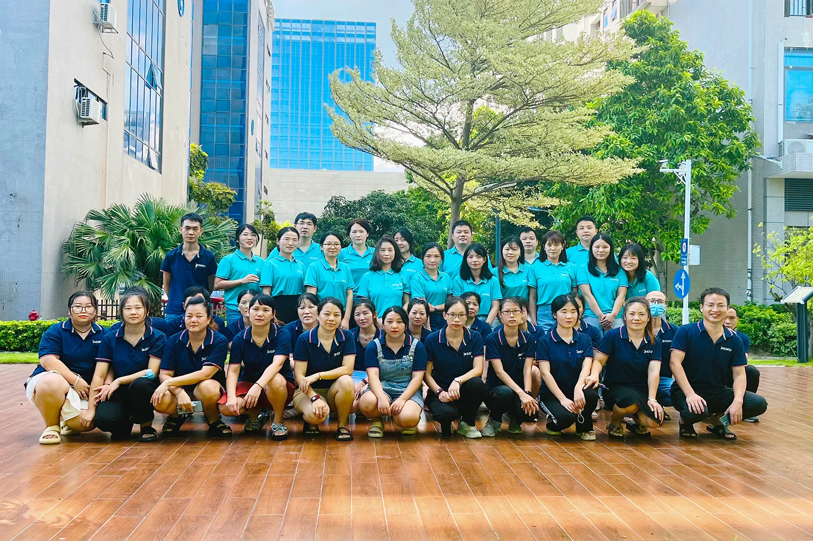
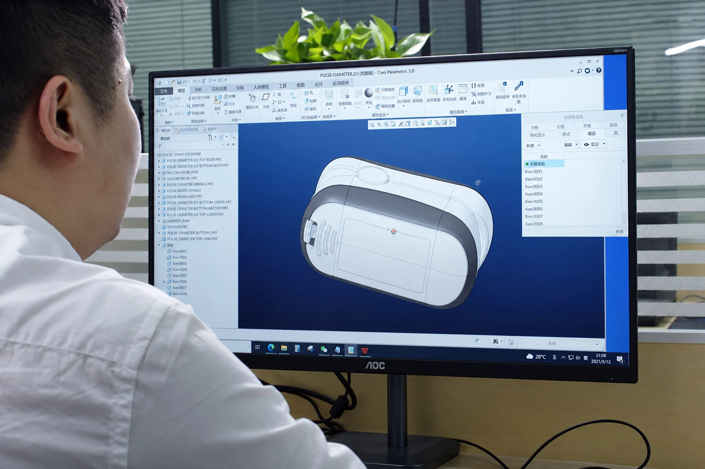

Testing workspace
This workspace supports our product development activities. For a model under review, discuss the technical requirements and supporting test information your team needs.
Medical devices.
Developed in-house.
A Shenzhen-based medical device manufacturer for overseas healthcare brands, distributors and OEM/ODM customers.

Founded in 2017, YimiLife brings together medical device development and manufacturing in Shenzhen, China. Our core product areas are pulse oximeters, blood pressure monitors and wearable monitoring devices. Our in-house R&D team is responsible for the full development process across our product portfolio.
Our focus is well-designed, quality products at competitive prices. For an OEM/ODM project, start with your target market, product requirements and budget. These inputs help us discuss a suitable model and customization scope with your team.
Our internal R&D team takes responsibility for the full development process across all YimiLife products.

End-to-end product development, carried out by our in-house R&D team.
Share the intended users, target market and required product changes so our team can review the development scope.
Explore the production environment, assembly and inspection activities behind our medical device manufacturing.
Explore manufacturing & quality →From product requirements to development and refinement, our in-house team brings the work together.
This workspace supports our product development activities. For a model under review, discuss the technical requirements and supporting test information your team needs.

Our in-house team brings electronics and product design into the development process. Discuss the functions, form and interfaces your project requires.
Our pulse oximeter signal platform focuses on PI 0.1% low-perfusion, performance under motion conditions and SpO₂ performance across diverse skin pigmentation.

The photograph shows documents displayed at our facility. For a specific product or project, ask our team which supporting documents are available for review.
Include the model and target market in your request. For patent-related questions, request the document title, holder and current status for the relevant product.
Discuss documentation needs →